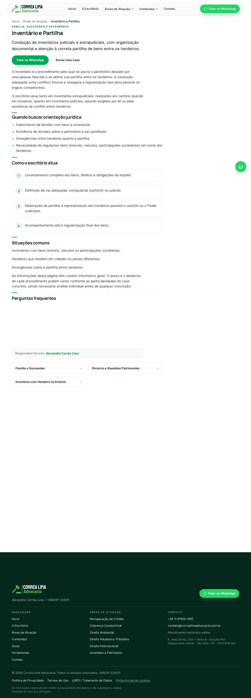
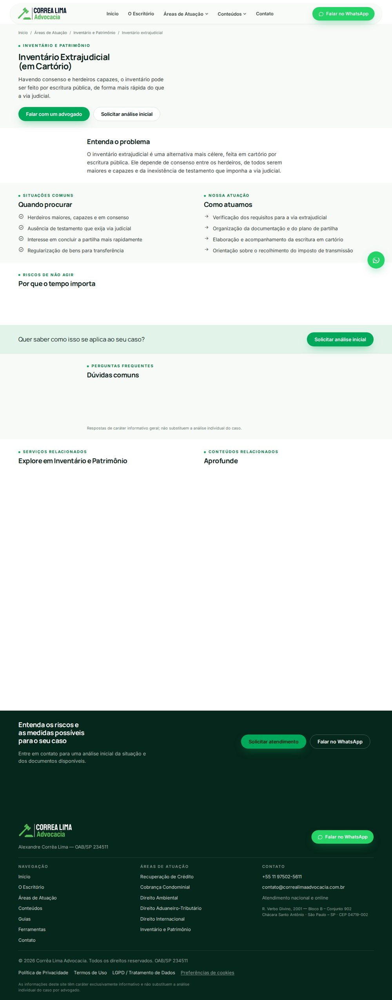
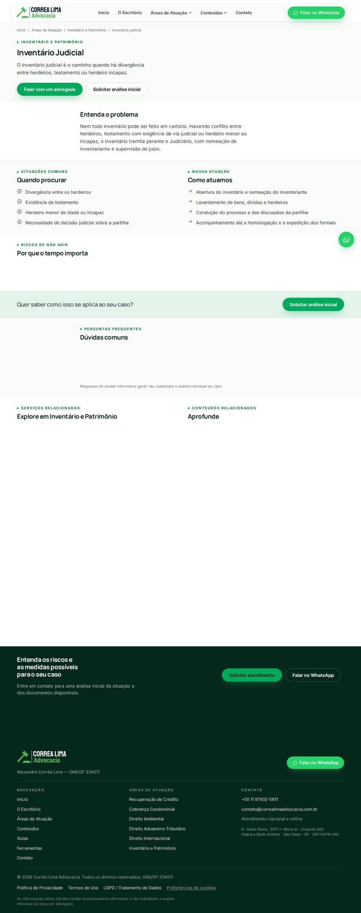
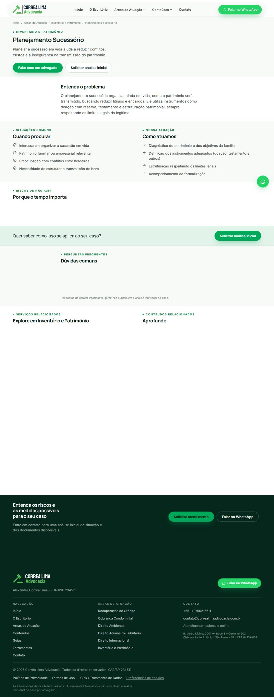
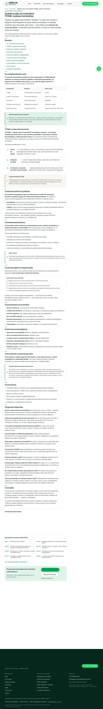
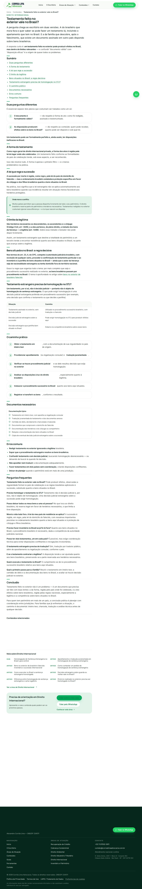
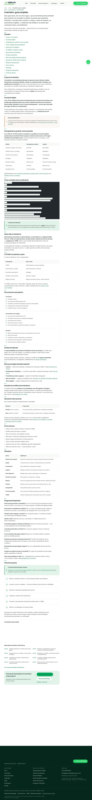

Corrêa Lima Advocacia · site Astro (estático, HostGator) · reorganização orientada a leitura e conversão, sem alterar conteúdo jurídico, URLs, slugs, SEO ou schema.
O diagnóstico mostrou dois tipos de página:
SubPage, orientado a dados) e os artigos/guias em .mdx (que já usam Callout, Checklist, sumário e tabelas). Já eram, na prática, landing pages. Foram preservadas..md e ~41 artigos/guias em .md. Eram paredes de texto: FAQ como parágrafos soltos terminando em "+", passos com número duplicado (1. 1Levantamento), "áreas relacionadas" como lista solta e uma cauda de CTA/contato repetida em toda página.A solução foi um plugin de build (rehype) que reorganiza esses padrões no momento da compilação, sem editar nenhum arquivo de conteúdo, mais uma folha de estilo editorial. Assim o mesmo tratamento se aplica de forma consistente a todas as páginas, sem duplicação de código e sem risco de reescrever texto jurídico.
<details>), removendo o "+" herdado do export.Criados nesta sprint (reutilizáveis, via plugin + CSS): bloco FAQ (acordeão), ProcessSteps (passos), RelatedCards (cartões de relacionados), table-wrap (tabela responsiva), cta-inline (botões), eyebrow/lead (categoria e resumo). Reaproveitam ContactCTA (criado na sprint anterior) para a conversão ao final.
Preservados: Callout, Checklist, ClusterNav, RelatedContent e o componente SubPage — que já entregavam páginas estruturadas.
As sete páginas indicadas. Observação importante: seis já eram estruturadas (subpáginas e .mdx); a reestruturação profunda incide sobre a página de área em .md e, sobretudo, sobre as ~60 páginas "flat" equivalentes em todo o site.
/areas-de-atuacao/inventario-e-partilha/

1. 1Levantamento).Usados: FAQ (acordeão), ProcessSteps, RelatedCards, cta-inline, eyebrow/lead, ContactCTA. Criados: os blocos de FAQ/Passos/Relacionados (via plugin).
/areas-de-atuacao/inventario-e-patrimonio/{inventario-extrajudicial · inventario-judicial · planejamento-sucessorio}/



Geradas pelo componente SubPage (orientado a dados). Já apresentam hero, breadcrumb, seções claras ("Entenda o problema", "Quando procurar", "Como atuamos", "Por que o tempo importa"), dúvidas comuns, checklists, cartões de navegação e CTA. Não são paredes de texto.
Usados (já existentes): SubPage, Checklist, cartões, CTA, ContactForm. Nenhuma alteração de conteúdo.
/blog/quanto-custa-um-inventario/ · /blog/testamento-feito-no-exterior-vale-no-brasil/


Callout e Checklist. Preservados integralmente (conteúdo-chave verificado: ITCMD, componentes de custo etc.).Usados: Callout, Checklist, tabela responsiva, sumário. Sem alteração de conteúdo.
/guias/inventario-guia-completo/

scripts/rehype-editorial.mjs — plugin de build (reorganização visual, conservador)
src/styles/content-editorial.css — estilos dos novos blocos (FAQ, passos, cartões, tabelas, CTA)
astro.config.mjs — registro do rehype plugin em markdown.rehypePlugins
src/layouts/BaseLayout.astro — import de content-editorial.css
Nenhum arquivo de conteúdo (src/content/**) foi alterado. A reorganização é 100% em tempo de build.
<details>/<summary> nativos (teclado + leitor de tela); hierarquia de headings preservada; foco visível; ícones com aria-hidden; contraste mantido.layout shift (estrutura já vem pronta do HTML).A pasta dist/ incluída na entrega está pronta para a HostGator: envie o conteúdo de dist/ para public_html (ou a pasta do domínio). As imagens do advogado já estão em dist/brand/.